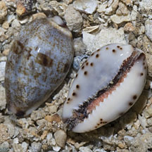
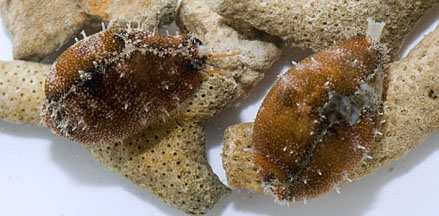

|
|
| shelled snails text index | photo index |
| Phylum Mollusca > Class Gastropoda > Family Cypraeidea |
| Graceful
cowrie Purpuradusta gracilis Family Cypraeidae updated Jul 2020 Where seen? This pretty cowrie is sometimes seen on our Northern shores, on rocks, also on rubble among seagrasses in a sandy lagoon. Often seen in a pair. It is considered uncommon elsewhere. It was previously known as Cypraea gracilis. Features: 2.5cm. Shell pear-shaped, bluish-grey with irregular brownish speckles or small darkish brown blotches or dark brown broken bars. Dark brown blotches at both the front and back ends. Underside white brown spots, without coloured 'teeth'. The living animal has a dark brown or reddish mantle with sparse short white 'hairs'. |
 Pulau Sekudu, Aug 13 |
 Pulau Sekudu, Aug 13 |
| Graceful cowries on Singapore shores |
On wildsingapore
flickr
|
| Other sightings on Singapore shores |
|
Acknowledgement
References
|